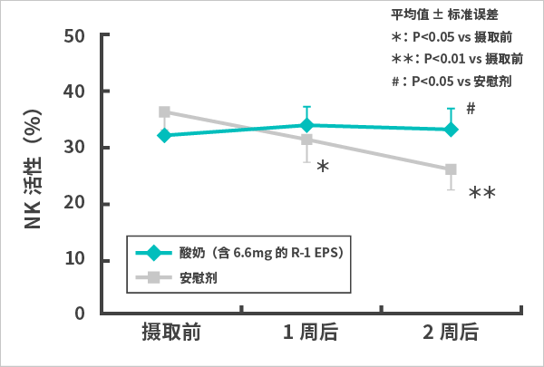
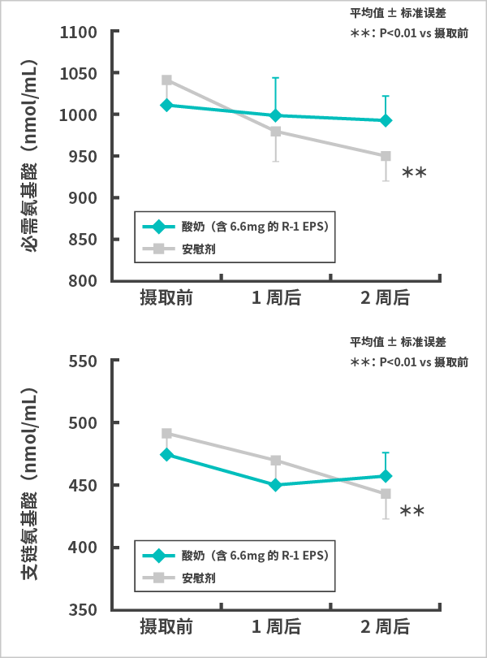

乳酸菌1073R-1株 实验结果(6)
研究结果表明，通过摄取使用乳酸菌1073R-1菌株的酸奶，有可能可以让维持免疫功能下降高风险人群有效维持正常免疫功能并保持良好身体状况。
在本研究中，已证明针对免疫功能下降高风险人群，也能有效维持正常免疫功能。此外，可以认为，摄取以OLL1073R-1菌株发酵的酸奶，能够抑制暂时性肠道功能下降和氨基酸代谢异常，以此来维持全身稳态并保持良好身体状况。本结果是通过摄取6.6mg（相当于此前实验的2倍）的R-1 EPS而首次证实的。
免疫功能下降风险
一般认为，免疫功能下降会增加各种传染病的罹患风险※1，并对身体及心理状况造成不良影响※2。免疫功能下降可以归咎于老化等各种原因，但一般认为，不规律的生活方式和剧烈运动等原因也会构成风险。此外，有报告显示，剧烈运动会损害肠道并降低蛋白质消化和吸收功能※3。对于运动员来说，维持正常免疫功能和血液中的必需氨基酸浓度，以促进训练后的肌肉损伤恢复，这对维持身体状况至关重要※4。
※1出典： Brolinson PG, et al. Clin Sports Med 26: 311-319, 2007.
※2出典： Agans RT, et al. Front Nutr 7: 70, 2020.
※3出典： van Wijck K, et al. Am J Physiol Regul Integr Comp Physiol 304: R356-361, 2013.
※4出典： Waskiw-Ford M, et al. Nutrients 12: 1061, 2020.
NK活性变化及血液中氨基酸浓度变化
大学田径队的18名男子长跑运动员及13名男子投掷运动员，按照运动项目随机分为2组，确保在分组上没有偏差，分别摄取以OLL1073R-1菌株发酵的酸奶（含6.6mg的R-1 EPS）或安慰剂的酸性乳饮料2周。此期间举办为期1周的训练营，让运动员实施剧烈运动。将NK活性作为主要评价项目。
NK活性变化(图1)

血液中氨基酸浓度变化(图2)

| 对象 |
大学田径队的18名男子长跑运动员及13名男子投掷运动员 |
| 人数 |
31名（平均年龄20.3岁，男性31名） |
| 量 |
以OLL1073R-1菌株发酵的酸奶（含6.6mg的R-1 EPS）组 112ml 2瓶/天
酸性乳饮料组 112ml 2瓶/天 |
| 为期 |
2周（含为期1周的训练营期间） |
结果显示，与安慰剂组（n=15）相比，本酸奶组（n=16）
- （1）
证实能显著抑制剧烈运动导致的NK活性下降并防止免疫功能下降（图1）。在其他免疫指标上也证明具备同样效果。
- （2）
表明能够抑制剧烈运动导致的血液中必需氨基酸及支链氨基酸浓度下降并防止身体状况下降（图2）。
从这些结果可以证明，通过摄取以OLL1073R-1菌株发酵的酸奶（含6.6mg的R-1 EPS），能够抑制剧烈运动导致的暂时性免疫功能下降。此外，可以认为，该酸奶能够抑制剧烈运动造成的肠道功能下降并将血液中的氨基酸浓度维持在正常水平，以此来保持良好身体状况。